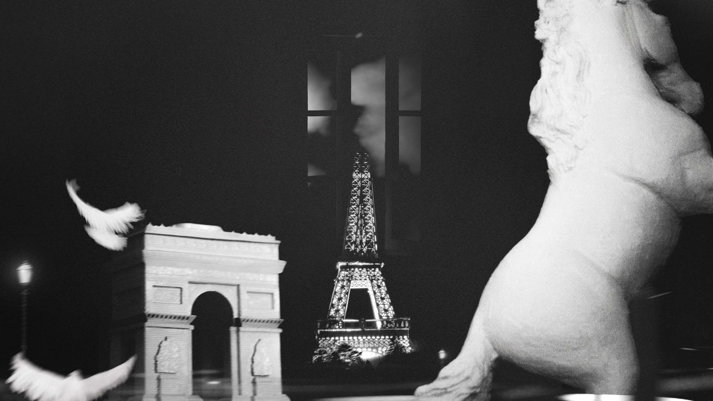

낮은 언덕 (Low Hill)
2022, 3′, Installation
내게 꿈이란 하나의 시공간에 빠져드는 상태이다. <낮은 언덕>이라는 제목에서 ‘낮은’은 높이와 공간을 측정하는 물리적 단어인 동시에 침잠(깊숙이 가라앉는)하는 행위의 연속성을 의미한다. 언덕 또한 그러한데 '언덕'은 불룩한 공간, 그리고 언덕을 오르는 행위의 연속성, 시간이 깃드는 상태의 접근이다.
To me, a dream is a state of immersion in a single space-time. The title "Low Hill" employs the word 'low,' a physical term measuring height and space, which simultaneously signifies the continuity of submergence (sinking deeply). The term 'hill' similarly involves a protruding space, and the continuity of ascending it, representing an approach to a state imbued with time.
